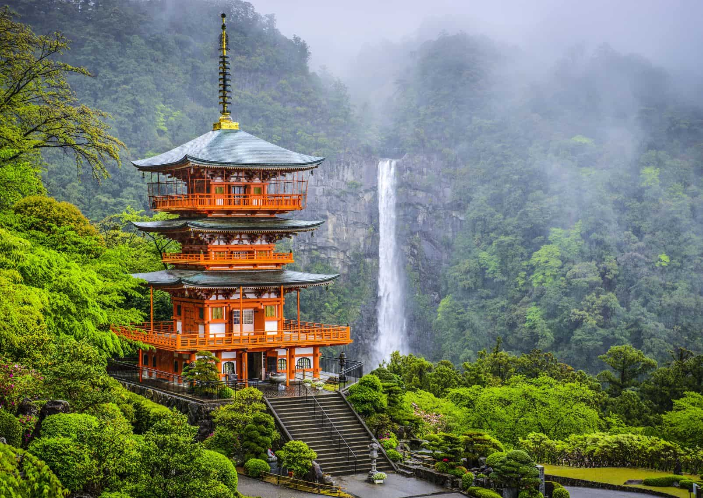
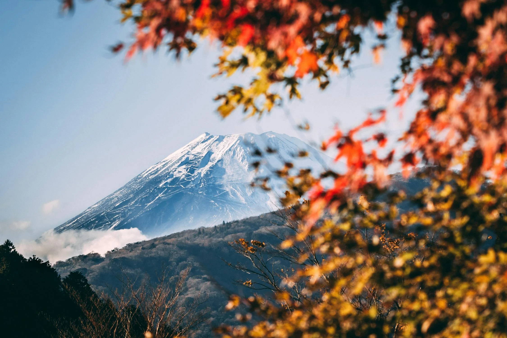
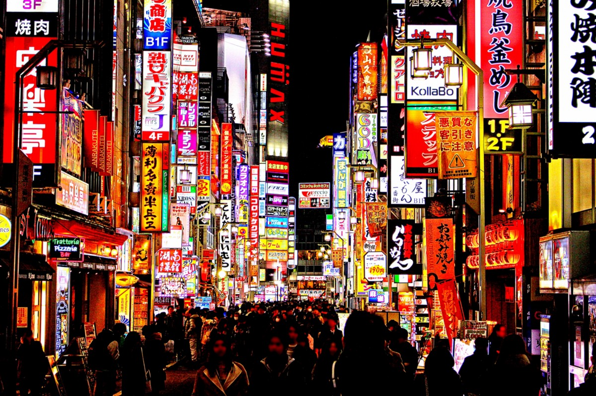
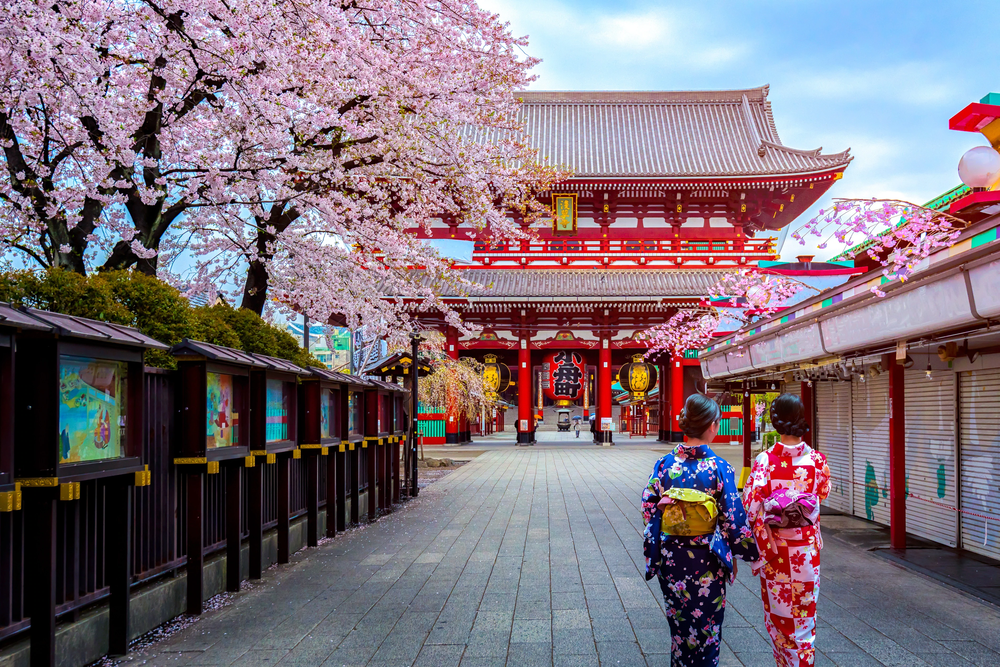
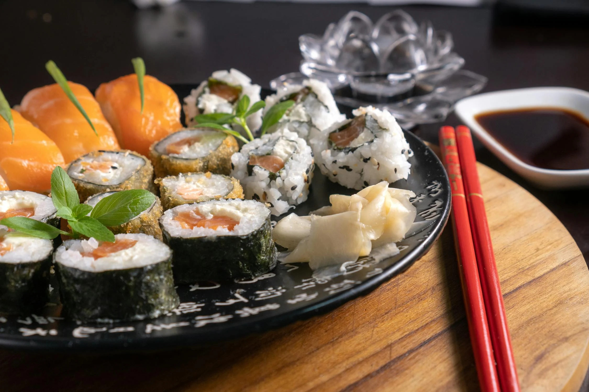

Tokyo,is a city where tradition meets the future, blending ancient temples with neon-lit skyscrapers and bustling streets. The aroma of fresh sushi fills the air at Tsukiji Market, while the vibrant energy of Akihabara excites tech and anime lovers. Whether strolling through cherry blossom-lined parks or exploring high-tech districts, Tokyo offers an unforgettable mix of history, fashion, and cutting-edge technology, making it a city like no other!
Let's Dive Into The City Filled With Sakura!
General Information
Continent
Asia
Capital
Tokyo
Language
Japanese
Population
13.96 million
Visa
Japan Visa required for non-japanese travelers
TimeZone
Japanese Standard Time (UTC+9)
Currency
Japanese Yen (¥)
Famous for
Anime, Cherry blossoms, Mount Fuji, Sushi, Bullet trains, Shinto shrines..
Travel Means
By Air, Rail and Seaways (ferry)
Months to visit
March to May & September to November.
About
Tokyo, the vibrant capital of Japan, is a mesmerizing blend of ultramodern innovation and deep-rooted tradition. Towering skyscrapers and neon-lit streets define its futuristic skyline, while centuries-old temples and shrines offer a glimpse into its rich cultural past. As one of the most populous cities in the world, Tokyo thrives on its diversity,catering to different lifestyles—whether it's fashion, business, or gaming and anime culture. The city’s public transport system, including the famous bullet trains (Shinkansen) and the efficient subway network, makes it easy for locals and visitors alike to explore every corner of this dynamic metropolis.
Japan, as a whole, is a country of contrast and harmony, where tradition and modernity coexist seamlessly. Known for its breathtaking natural beauty, the country boasts iconic landmarks such as Mount Fuji, the Arashiyama Bamboo Forest, and the historic temples of Kyoto. Japan is also famous for its deep culinary heritage, offering everything from world-renowned sushi and ramen to unique street food experiences. The nation’s meticulous craftsmanship is evident in its high-quality technology, precision watches, and artistic practices like origami and tea ceremonies.



Popular destinations

Shinjuku
Shinjuku is one of Tokyo’s most vibrant and busiest districts, known for its skyscrapers, shopping, entertainment, and nightlife and is a mix of city life & traditions.

Asakusa Shrine
Asakusa Shrine is a historic Shinto shrine located in Tokyo. It was built in 1649 by the Tokugawa shogunate to honor the three fishermen who founded Senso-ji.
Mount Fuji
Mount Fuji is Japan’s highest mountain, standing at 3,776 meters (12,389 feet). It is an active stratovolcano, though it last erupted in 1707-1708.

Ueno Park & Zoo
Ueno Park is one of Tokyo’s most famous public parks, known for its cherry blossoms, museums, and cultural landmarks. It’s a great spot for a relaxing day in the city.
Major Celebrations & Cultural Festivities
1.Cherry Blossom Festivals (Hanami)
📅 March to April
🎭 Japan's most celebrated event
Hanami (花見), meaning "flower viewing," is a beloved Japanese tradition of enjoying cherry blossoms (sakura) in full bloom. It typically takes place from late March to early April, depending on the region. People gather in parks for picnics, food, and celebrations under the pink blossoms.
2. Gion Matsuri (祇園祭)
📅 July
🎆 Japan’s Biggest National Celebration
One of Japan’s oldest and biggest festivals, dating back over 1,100 years. It features massive floats, parades, traditional music, and vibrant street celebrations.Started in 869 AD as a ritual to stop plagues.Over the centuries, it grew into a major cultural and religious event.
3.Awa Odori (Tokushima)
📅 August 12-15
🎆 Japan’s Biggest Dance Festival
Japan’s largest dance festival, attracting over 1.3 million visitors every year! The streets come alive with energetic traditional dances, music, and colorful costumes.Originated over 400 years ago during the Edo period. Believed to have started in 1586, when Tokushima’s feudal lord threw a huge celebration and people danced in the streets. Now, it’s one of Japan’s most vibrant and energetic festivals.
Important Landmarks


Popular Food and Cuisines
1. Sushi (寿司)
Sushi is one of the most famous Japanese foods.
It consists of vinegared rice (shari) combined with
various ingredients like raw fish, seafood, and vegetables.

2. Ramen (ラーメン)
Ramen is a popular Japanese dish consisting of wheat noodles
served in a savory broth,topped with various ingredients. It's a
must-try comfort food in Japan, especially in Tokyo, where unique
regional styles exist.
3.Okonomiyaki (お好み焼き)
Okonomiyaki is a Japanese-style savory pancake made
with flour, eggs, shredded cabbage, and various toppings.
The name "okonomiyaki" (お好み焼き) means "grilled as you
like", because you can customize it with different ingredients.
Best Time to Visit for Different Activities
Best for Cherry Blossoms & Mild Weather: March – April
Best for Festivals & Fireworks (but very hot!): July – August
Best for Fall Colors & Comfortable Weather: October – November
Best for Illuminations & Fewer Crowds: December – February